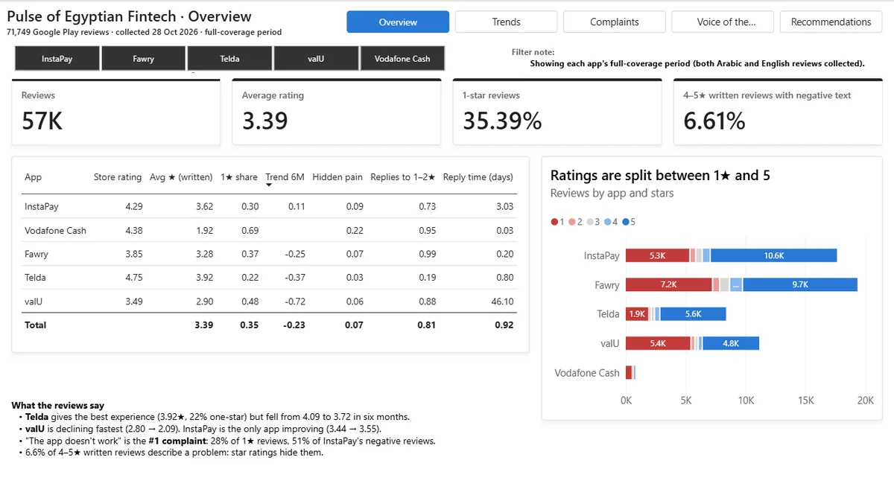

أحدث مشروع · مكتملOct – Nov 2026
Pulse of Egyptian Fintech
تحليل لـ71,749 مراجعة حقيقية على Google Play لخمس تطبيقات مالية مصرية: InstaPay وVodafone Cash وTelda وvalU وFawry. بيجاوب على: إيه أكتر حاجة بتضايق المستخدمين؟ التقييمات نزلت إمتى وليه؟ وأنهي تطبيق بيقدّم أحسن تجربة؟ بالعربي والإنجليزي والفرانكو-عربي.
- ست موجات شكاوى، واتحدد سبب كل واحدة. إصدار InstaPay 1.12.0 لوحده جاب حوالي 1,200 تقييم بنجمة واحدة في أسبوعين.
- 6.6% من المراجعات المكتوبة بـ4–5 نجوم بتوصف مشكلة حقيقية، وده اللي التقييم بالنجوم بيخبّيه.
- نموذج Star Schema وقياسات DAX و14 توصية، كل واحدة مربوطة برقم من المراجعات.